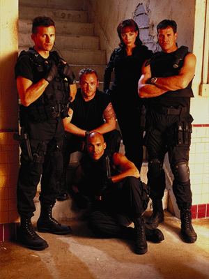

MANY
SHOWS ARE STILL TO BE ADDED TO THIS PAGE. STAY TUNED!THE A-TEAM
George Peppard and Mr. T starred in this action series about a band of
Viet Nam vets who became soldiers of fortune in 1980s Los Angeles. [ONR]
ACAPULCO H.E.A.T.
ADAM-12 - Police Drama
A series developed by Jack Webb
("Dragnet") about two Los Angeles police officers, and the calls they
responded to in a normal work day. Like "Dragnet," this show stressed
authenticity, as the officers responded to several calls in each episode. Martin
Milner and Kent McCord starred. The series aired on NBC from 1968-75. KPTV aired
reruns after the series ended production.
THE ADDAMS FAMILY - Comedy
ADVENTURE
ADVENTURES OF THE GALAXY RANGERS - Cartoon
ADVENTURES OF THE GUMMI BEARS - Cartoon
THE ADVENTURES OF T-REX - Cartoon
THE ADVENTURES OF THE LITTLE MERMAID - Cartoon
ALADDIN - Cartoon
ALGO'S FACTORY - Children
ALL DOGS GO TO HEAVEN - Cartoon
AMERICA
AMERICAN AT WORK
AMERICAN WEST
AMERICA'S MOST WANTED: FINAL JUSTICE
ANIMALS IN ACTION
THE ARCHIES - Cartoon
Animated version of the long-running comic
strip, following the adventures of Riverdale teenagers Archie, Jughead, Betty,
Veronica, Reggie and their friends. This series was a compilation of several
different "Archie" series that aired on CBS on Saturday mornings
throughout the 1970s.
AROUND THE WORLD IN EIGHTY DREAMS - Cartoon
ARREST & TRIAL
THE ARSENIO HALL SHOW - Talk Show
ARTHEL & FRED - Talk Show
ASK CONGRESS
AUDUBON WILDLIFE THEATER
B.A.D. - Cartoon
BABY HUEY - Cartoon
BABYLON 5 - Science Fiction
[SYN]
BANANAS IN PAJAMAS & THE CRAYON BOX -
Children
BARNABY JONES - Crime Drama
Buddy Ebsen played a
detective and Lee Meriweather his assistant/daughter-in law in this Quinn Martin series.
[ONR]
BARNEY MILLER - Situation Comedy
BATMAN - Campy Adventure
Live-action version of the adventures of the
comic book superhero, played for campy laughs. A Gotham City millionaire, Bruce
Wayne, takes on a secret identity as The Caped Crusader to fight villains and
keep the streets safe for the citizenry. Starred Adam West as Batman and Burt
Ward as Robin. The series originally aired on ABC 1966-68. KPTV aired the
reruns.
BATTLE DOME
BATTLESTAR GALACTICA
BAYWATCH/BAYWATCH HAWAII
BAYWATCH NIGHTS
BEAT THE CLOCK - Game Show
BEAT THE ODDS
BEETLEBORGS - Cartoon
BENNY HILL - Comedy
BENSON - Situation Comedy
BEWITCHED - Situation Comedy
BIG BLUE MARBLE
THE BIG VALLEY - Western
BIKER MICE FROM MARS - Cartoon
THE BILL COSBY SHOW - Comedy
BILLY WALKER'S COUNTRY
CARNIVAL
 |
THE BIONIC WOMAN - Science Fiction/Adventure |
BLACK BEAUTY
BLINKY BILL - Cartoon
BLOOPY'S BUDDIES - Cartoon
BOBBY GOLDSBORO - Variety
THE BOBBY LORD SHOW
THE BOLD ONES
BONANZA - Western
BONKERS - Cartoon
BOXING FROM LAS VEGAS
BOXING FROM THE OLYMPIC
|
BOY MEETS WORLD - Situation Comedy |
BRACKEN'S WORLD
THE BRADY BUNCH - Situation Comedy
 |
THE BRADY BUNCH - Situation Comedy |
BRAVESTARR - Cartoon
BREADBASKET
BREAKER HIGH - Teens
|
BUCK ROGERS IN THE 25TH CENTURY - Science
Fiction |
BUCK OWENS RANCH SHOW
BUCKY O'HARE AND THE TOAD WARS - Cartoon
BUGS BUNNY & FRIENDS - Cartoons
|
BULLSEYE - Game Show
Jim Lange ("The Dating Game") hosted
this question and answer game show. Two contestants would "spin" a
game board with three wheels, and then attempt to answer a number of questions
determined by the board. KPTV aired the show in first-run syndication. |
BULLWINKLE - Cartoon
BURKE'S LAW
THE BURNING ZONE
BUZZ LIGHTYEAR OF STAR COMMAND - Cartoon
CBS SPORTS SPECTACULAR - Sports
CAR CARE CENTRAL
CARSON'S COMEDY CLASSICS
CATWALK
CHALLENGE OF THE GOBOTS - Cartoon
CHANGE OF HEART - Game Show
CHEERS - Situation Comedy
CHEYENNE - Western
CHILDREN'S THEATER
CHIP & DALE'S RESCUE RANGERS - Cartoon
CHIP'S/CHIP'S PATROL
CLUELESS - Situation Comedy
COACH - Situation Comedy
COBRA
COLT .45
COMEDY BREAK
THE COMIC STRIP - Cartoons
CONAN THE ADVENTURER - Cartoon
CONAN THE ADVENTURER - Fantasy Adventure
C.O.P.S. - Cartoon
THE COSBY SHOW - Situation Comedy
COUNTDOWN AT THE NEON ARMADILLO - Music
THE COURTSHIP OF EDDIE'S FATHER - Situation Comedy
CRAFTS WITH KATY
DAN SMOOT
DANGER IS MY BUSINESS
DANGEROUS WOMEN
DANIEL BOONE - Western
DARING VENTURES
DARKSTALKERS - Cartoon
DARKWING DUCK - Cartoon
THE DATING GAME - Game Show
THE DAVID FROST SHOW - Talk Show
DEADLY GAMES
DEAN MANION
DEAR JOHN - Situation Comedy
DICK POWELL THEATER
DIFF'RENT STROKES - Situation Comedy
DILBERT - Cartoon
DINAH! - Talk Show
DINOBABIES - Cartoon
DINO-RIDERS - Cartoon
DIRESTA - Situation Comedy
THE DR. IRENE KASSORLA
SHOW
DONNY & MARIE - Talk Show
DOUG - Cartoon
DRAGNET - Police Drama
DRAGONBALL Z - Cartoon
DUCK TALES - Cartoon
DUDLEY DORIGHT - Cartoon
DUET - Situation Comedy
THE DUKES OF HAZZARD -
EMERGENCY!/EMERGENCY ONE!
|
ENTERPRISE - Science Fiction |
EVERYBODY LOVES RAYMOND - Situation Comedy
KPTV aired off-network reruns of the show beginning in the fall of 2001.
EVERYDAY
EXOSQUAD - Cartoon
THE F.B.I.
FACES & PLACES
FAMILY CLASSICS: ROBIN HOOD
FAMILY MATTERS - Situation Comedy
FAMILY TIES - Situation Comedy
FANTASTIC FOUR - Cartoon
FASHIONS IN SEWING WITH
LUCILLE RIVERS
FERNWOOD 2-NIGHT
FLASH GORDON - Cartoon
THE FLINTSTONES - Cartoon
FOREIGN LEGIONNAIRE
FORGIVE OR FORGET - Talk Show
4-H ACTION CLUB
FREEDOM
FUN HOUSE - Children
FX: THE SERIES
THE GALLOPING GOURMET - Cooking
GAMBIT - Game Show
Two husband-and-wife couples competed against each other by answering questions.
A right answer gave them the option to keep or to give away a playing card in a
game of blackjack. The object was to score "21" exactly, or get as
close as possible to 21 without going over before the opponent did. The first
team to win two games won the match, $200, and a chance to play the Gambit Board
for merchandise prizes. Wink Martindale was the host. The 1978 episodes were
repeats of the 1972-76 CBS daytime series.
GARFIELD AND FRIENDS - Cartoon
GARGOYLES - Cartoon
GEM
GENTLE BEN -
THE GEORGE KIRBY SHOW
GHOSTWRITER - Children
G.I. JOE - Cartoon
G.I. JOE II - Cartoon
G.I. JOE: EXTREME- Cartoon
GILLIGAN'S ISLAND - Situation Comedy
GIRL TALK - Talk Show
Syndicated show hosted by Virginia
Graham (and later, Betsy Palmer) focusing on issues for women. The show was
produced from 1963-70.
GIRLFRIENDS - Situation Comedy
GOMER PYLE, U.S.MC. - Situation Comedy
GOOD DAY!
GOOD NEWS - Situation Comedy
GOOD TIMES - Situation Comedy
GOODE BEHAVIOR - Situation Comedy
GOOF TROOP - Cartoon
GOVERNMENT STORY
GRACE UNDER FIRE - Situation Comedy
GRAND PRIX ALL-STAR SHOW
THE GREAT SPACE COASTER - Cartoon
GREATEST FIGHTS
THE GREATEST SHOW ON EARTH
THE GREEN HORNET
GROWING PAINS - Situation Comedy
GROWN UPS - Situation Comedy
THE GUINNESS GAME - Game Show
GULLIVER'S TRAVELS - Cartoon
GUYS LIKE US - Situation Comedy
HANGIN' WITH MR. COOPER - Situation Comedy
HAPPY DAYS/HAPPY DAYS AGAIN - Situation Comedy
THE HARDY BOYS/NANCY DREW MYSTERIES - Mystery
HAVE GUN, WILL TRAVEL
HAWAII CALLS
HAWAII FIVE-O
HAWKEYE
HE SAID, SHE SAID - Game Show
HEAD OF THE CLASS - Situation Comedy
HEAD OVER HEELS - Situation Comedy
HEADLINE NEWS (CNN) - News
HEALTH FIELD
HEATHCLIFF - Cartoon
HEAVEN HELP US
HECKLE & JECKLE & FRIENDS - Cartoon
HEE HAW
HERCULES - Cartoon
HERE COME THE BRIDES
HIGH & WILD
HIGH SCHOOL SPORTS SHOW
HIGHLANDER: THE ANIMATED SERIES - Cartoon
HIGHLANDER: THE RAVEN - Fantasy Adventure
HIGHWAY TO HEAVEN
HIPPITY HOOPER - Cartoon
HITZ - Situation Comedy
THE HOGAN FAMILY - Situation Comedy
HOGAN'S HEROES - Situation Comedy
HOLIDAY
HOLLYWOOD A GO GO
HOLLYWOOD SQUARES - Game Show
Peter Marshall hosted this syndicated version of the long-running
(1966-1980) NBC game show.
HOMEBOYS IN OUTER SPACE - Situation Comedy
HONEY, I SHRUNK THE KIDS
THE HONEYMOONERS - Situation Comedy
HOPALONG CASSIDY
HOT FUDGE
HOT TICKET - Movie Reviews
HOUSE CALLS
HOWARD STERN
HUCKLEBERRY HOUND - Cartoon
|
THE HUGHLEYS - Situation Comedy |
THE HUMAN JUNGLE
I.N.N. NEWS
I DREAM OF JEANNIE - Situation Comedy
I LOVE LUCY - Situation Comedy
IRONMAN - Cartoon
IN SEARCH OF...
IN THE HOUSE - Situation Comedy
[UPN]
THE INCREDIBLE HULK - Cartoon
INSIGHT
INSPECTOR GADGET - Cartoon
THE INVADERS
IRON MAN - Cartoon
ISLANDS IN THE SUN
IT TAKES A THIEF - International Intrigue
JACK HANNA'S ANIMAL ADVENTURES
THE JACK LA LANNE SHOW -
Exercise
JAYCE AND THE WHEELED WARRIORS - Cartoon
JAMES BOND, JR. - Cartoon
JEM - Cartoon
JEOPARDY - Game Show
JIM HENSON'S MUPPET BABIES - Cartoon
THE JOANNE CARSON SHOW
JOKER! JOKER! JOKER! - Game Show
THE JOKER'S WILD/THE NEW JOKER'S WILD - Game
Show
Players spin a giant slot machine and answer general
knowledge questions. Jack
Barry hosted the show during it's CBS incarnation (1972-75), and in the
syndicated version from 1977 until his death in 1984. Bill Cullen took over as
host from 1984-86. KPTV ran the CBS version as a secondary affiliate because
KOIN (6) pre-empted the series in favor of a local show.
THE JON STEWART SHOW
THE JOY OF GARDENING
JUDD FOR THE DEFENSE
JUDGE HATCHETT
JUDGE JUDY
 |
JUDGE MILLS LANE |
JUMANJI - Cartoon
KENNY EVERETT VIDEO
KIDS INCORPORATED
THE KING AND ODIE
KING ARTHUR AND THE KNIGHTS OF JUSTICE -
Cartoon
KROFF SUPERSTARS
KUNG FU
KUNG FU: THE LEGEND CONTINUES
L.A.P.D.
LAND OF THE GIANTS -
LAND'S END
LARAMIE
LASSIE
LAST OF THE WILD
THE LATE SHOW STARRING JOAN RIVERS/THE LATE
SHOW -
Talk Show
LAVERNE & SHIRLEY - Situation Comedy
LAWMAN
LEGACY
THE LEGEND OF TARZAN - Cartoon
LEVEL 9
THE LIFE AND TIMES OF GRIZZLY ADAMS
LIFESTYLES OF THE RICH AND FAMOUS
LIGHTNING FORCER
LITTLE HOUSE ON THE PRAIRIE - Family Drama
LIVE SHOT
LIVE! WITH REGIS AND KATHIE LEE - Talk Show
THE LLOYD THAXTON SHOW
LONESOME DOVE: THE SERIES
THE LOVE BOAT
LOVE BOAT: THE NEXT WAVE
LOVE CONNECTION
THE LOVE EXPERTS - Game Show
Bill
Cullen hosted this relationship show in which
a panel of celebrities offered advice to lovelorn contestants. The panel picked
the contestant who provided the most unusual problem, and that person won a
prize at the end of the show. Also featured was a question and answer
segment with members of the studio audience. Syndicated, 1978-1979.
LOVE SONGS
M.A.S.K. - Cartoon
 |
MAD ABOUT YOU - Situation Comedy |
MAD SCIENTIST - Cartoon
MADAME'S PLACE
MAGILLA GORILLA - Cartoon
MALCOLM & EDDIE - Situation Comedy
THE MAN TRAP
THE MANCINI GENERATION
MARCUS WELBY, M.D.
MARLO AND THE MAGIC MOVIE MACHINE - Children
MARRIED...WITH CHILDREN - Situation Comedy
MARTY ROBBIN'S SPOTLIGHT
MARY HARTMAN, MARY HARTMAN
 |
MATCH GAME - Game Show
Two contestants try to match the answers of six celebrities, for a
possible $20,000 cash prize. Gene Rayburn was the host, which featured
Charles Nelson Reilly and Brett Somers as regular panelists. KPTV
aired the syndicated version of the 1973-79
CBS series. |
MATLOCK
MAXIE'S WORLD - Cartoon
MAXIMUM EXPOSURE
MC HALE'S NAVY
MEGA MAN - Cartoon
MERCY POINT - Science Fiction
THE MERV GRIFFIN SHOW - Talk
THE MICKEY MOUSE CLUB
MIGHTY MAX - Cartoon
THE MIKE DOUGLAS SHOW
MISSING/REWARD
MISSION: IMPOSSIBLE
The series originally aired on CBS from
1966-73.
MR. BOGUS - Cartoon
MR. ED - Situation Comedy
MR. PRESIDENT - Situation Comedy
MR. WIZARD - Children
THE MOD SQUAD
The series originally aired on ABC from
1968-73.
MOESHA - Situation Comedy
MONKEY MAGIC - Cartoon
MONSTER FORCE - Cartoon
THE MONTE CARLO SHOW - Variety
 |
THE MONTEL WILLIAMS SHOW - Talk Show |
THE MOUSE AND THE MONSTER - Cartoon
THE MOVIE GAME - Game Show
First-run syndicated game show hosted, first,
by Sonny Fox, and later Larry Blyden. Two three-member teams (consisting of two
celebrities and one contestant) competed to answer questions about---what
else?---movies. The series lasted only one season, 1969-70.
THE MUPPET SHOW
MUTANT LEAGUE - Cartoon
MY LITTLE PONY 'N' FRIENDS
NAKED CITY
NAME THAT TUNE - Game Show
THE NANNY - Situation Comedy
NANNY AND THE PROFESSOR - Situation
Comedy
Half-hour sitcom starring Juliet Mills as an
English nanny who becomes housekeeper and governess to a widowed professor and
his three children. Pheobe Figalilly (better known as "Nanny") was
gifted with mysterious powers that would help avert a family crisis. Also
starring Richard Long ("The Big Valley"). The series aired on ABC from
1970-71, and KPTV aired the reruns.
NASHVILLE ON THE ROAD - Music
NAVY FILM OF THE WEEK
THE NEW ADVENTURES OF BEANS BAXTER
NEW FACES IN COUNTRY MUSIC
THE NEW MICKEY MOUSE CLUB
THE NEW ZOO REVIEW - Children
THE NEWLYWED GAME/THE NEW NEWLYWED GAME - Game
Show
NEWS FOR KIDS - Children
NEWS SCOPE
NEWSRADIO - Situation Comedy
THE NEWZ
NIGHT GALLERY - Suspense
THE NIGHT STAND WITH DICK DIETRICK
NORTHWEST HUNTER
NORTHWEST TRAVELER
NOT FOR WOMEN ONLY
Polly Bergen and Frank Field hosted this
syndicated daily talk show. The original host, Barbara Walters, (and later
co-host Hugh Downs) had left the series by the time it was picked up by KPTV.
NOW YOU SEE IT - Game Show
NOWHERE MAN
THE ODD COUPLE - Situation Comedy
OMNI: THE NEW FRONTIER - Science
ON THE MONEY WITH BRIAN BANMILLER/ON THE MONEY
ONE ON ONE - Situation Comedy
OSCAR'S ORCHESTRA - Cartoon
THE OUTLAWS
|
THE PARKERS - Situation Comedy |
PASSPORT TO TRAVEL
THE PATTY DUKE SHOW - Situation Comedy
PEPPER ANN - Cartoon
PERRY MASON - Mystery
Running on CBS from 1957-66, KPTV aired reruns
of "Perry Mason" from 1966 until 2002.
THE PERSUADERS
PETER BENCHLEY'S AMAZON
PETER POTAMUS - Cartoon
PETTICOAT JUNCTION - Comedy
PHANTOM 2040 - Cartoon
PICK YOUR BRAIN
THE PINK PANTHER - Cartoon
PITFALL - Game Show
Alex Trebek ("Jeopardy") hosted this show
which The show was syndicated from September 1981-September
1982.
POINTMAN
POP! GOES THE COUNTRY
PORTER WAGONER - Music
PREMIER STORY
QUEEN OF SWORDS
RAINBOW BRITE
THE REAL GHOSTBUSTERS - Cartoon
RECESS - Cartoon
RELIC HUNTER - Adventure
THE RICHARD BEY SHOW - Talk Show
RICHIE RICH - Cartoon
THE RICKI LAKE SHOW - Talk Show
THE RIFLEMAN
ROBIN'S HOODS
ROBOCOP
ROCK CONCERT
THE ROCKFORD FILES - Crime Drama
ROCKY AND HIS FRIENDS - Cartoon
ROBOCOP - Cartoon
ROGER RAMJET
THE ROGUES
ROLLER DERBY
RON HAZELTON'S HOUSE CALLS
ROOM 222 - Situation Comedy
ROSE PETAL PLACE - Cartoon
ROSEANNE - Situation Comedy
RUN FOR YOUR LIFE
SABRINA, THE ANIMATED SERIES - Cartoon
 |
SABRINA THE TEENAGE WITCH -Situation Comedy |
SAFARI TO ADVENTURE
SAILOR MOON - Cartoon
SATURDAY NIGHT/THE BEST OF SATURDAY NIGHT LIVE
SCARECROW AND MRS. KING
SEA HUNT
SEARCH FOR TOMORROW
SECOND CHANCE
THE SECRET DIARY OF DESMOND PFEIFFER - Situation Comedy
SECRETS OF THE DEEP - Documentary
Half-hour documentary series about oceans and marine life. Hosted by
former astronaut Scott Carpenter. Syndicated, 1974.
SEINFELD - Situation Comedy
THE SENTINEL
SERGEANT PRESTON OF THE YUKON
7 DAYS - Adventure
SHASTA MC NASTY
SHIVAREE
SING ME A STORY WITH BELLE - Children
SIRENS
SISTER, SISTER - Situation Comedy
SKI WEST
SKIPPY
THE SMURF'S ADVENTURES
SOAP
SOCIAL SECURITY
|  |
SOLDIER OF
FORTUNE/S.O.F.: SPECIAL OPS FORCE |
SOLID GOLD - Music
THE SONNY & CHER COMEDY
HOUR - Variety
THE SOURCE SOUND LAB
SPACE STRIKERS - Cartoon
SPARKS - Situation Comedy
SPECIAL OF THE WEEK
SPECIAL UNIT 2 - Science Fiction
SPEED RACER - Cartoon
SPIDER-MAN - Cartoon
SPIN CITY - Situation Comedy
STAR SEARCH
THE START OF SOMETHING BIG - Interviews
STAR TREK - Science Fiction
Although the series never garnered high ratings
during it's years on NBC (1966-69), the show achieved cult status when it began
reruns on local stations around the country, in 1969. The series became a
KPTV staple, airing for more than 30 years. It finally left the KPTV airwaves
after Paramount, the show's syndicator, sold the exclusive rights to cable's
Sci-Fi Channel.
STAR TREK DEEP SPACE NINE - Science Fiction
STAR TREK: THE NEXT GENERATION - Science
Fiction
STAR TREK VOYAGER - Science Fiction
STARSKY & HUTCH - Crime Drama
STEP BY STEP - Situation Comedy
STONEY BURKE
STRANGE UNIVERSE
THE STRIP
STUNT DAWGS - Cartoon
SUPER CHARGERS
SUPER FORCE
SUPERBOY
SUPERFRIENDS
SUPER SATURDAY
THE SUZANNE SOMERS SHOW - Talk Show
SWEET VALLEY HIGH - Teens
T-REX - Cartoon
TAKE MY WORD FOR IT - Game Show
A short-lived (one season) syndicated revival
of the 1960's show "Oh My Word," where a player picked a word off the
board, and each of three celebrities gave a funny definition for it. It was up
to the player to choose which definition was correct in order to score. Hosted
by Jim Lange ("The Dating Game").
TALE SPIN - Cartoon
TALES OF WELLS FARGO
TARZAN
TEENAGE MUTANT NINJA TURTLES - Cartoon
TEKNOMAN - Cartoon
TEMPESTT - Talk Show
TENNESSEE TUXEDO - Cartoon
TEXAS JUSTICE
THAT GOOD OLE NASHVILLE MUSIC
THEN CAME BRONSON - Adventure
Michael Parks starred as Jim Bronson, a
disillusioned young man finding adventure while traveling the country on his
motorcycle. The series aired on NBC from 1969-70, and KPTV aired the reruns.
THIS IS TOM JONES
THREE PASSPORTS TO ADVENTURE
THE THREE STOOGES
THREE'S COMPANY/THE ROPERS - Situation Comedy
THUNDER IN PARADISE
TIME TRAX - Science Fiction
TIMON & PUMBAA - Cartoon
TOM AND JERRY - Cartoon
TOM JONES
TOON TOWN KIDS - Children
TOUCH TURTLE AND FRIENDS
TIC-TAC-DOUGH - Game Show
THE TRACEY ULLMAN SHOW - Comedy
TRACKER - Science Fiction/Adventure
TRANSFORMERS - Cartoon
TRANSFORMERS: GENERATION 2 - Cartoon
TREASURE
TV 2000
TV BIBLE CLASS
12 O'CLOCK HIGH
21 JUMP STREET
THE TWILIGHT ZONE
UPN BLOCKBUSTER SHOCKWAVE CINEMA/UPN MOVIE
TUESDAY/UPN THURSDAY NIGHT AT THE MOVIES/UPN MOVIE FRIDAY - Movies
UPN MOVIE TRAILER/UPN WEEKEND MOVIE - Movies
UNDERDOG - Cartoon
THE UNTOUCHABLES
V.I.P. - Adventure
VAGABOND
VIBE
VICKI!- Talk Show
VICTORY AT SEA
THE VIRGINIAN - Western
VISIONARIES
VOLTRON - Cartoon
VOYAGE TO THE BOTTOM OF THE SEA
WWF SMACKDOWN! - Wrestling
WWF WRESTLING - Wrestling
THE WACKY WORLD OF TEX AVERY - Cartoon
THE WALL STREET JOURNAL REPORT
WALLY'S WORKSHOP
WANDERLUST
WAR OF THE WORLDS - Science Fiction
WATCH YOUR MOUTH
THE WEEKENDERS - Cartoon
WELCOME BACK, KOTTER - Situation Comedy
WEREWOLF - Thriller
WHAT'S HAPPENING NOW!!
WHO'S THE BOSS - Situation Comedy
WIDGET - Cartoon
WILD KINGDOM
WILD THINGS
THE WILD, WILD WEST - Western
WINNIE THE POOH - Cartoon
THE WIZARD OF OZ - Cartoon
WOMEN IN PRISON - Situation Comedy
WONDER WOMAN
THE WONDER YEARS - Situation Comedy
THE WONDERFUL WORLD OF DISNEY
WONDERFUL WORLD OF WOMEN
WONDERS OF THE WORLD
WOODY WOODPECKER - Cartoon
WOODY WOODPECKER & FRIENDS - Cartoon
WORLD OF SURVIVAL
THE WORLD TOMORROW
WORLD WAR II: G.I. DIARY
Lloyd Bridges narrated this series of documentaries focusing on World War
II from the point of view of the American soldier. Syndicated, 1978.
X-MEN - Cartoon
YOGI BEAR - Cartoon
YOU ASKED FOR IT
YOU BET YOUR LIFE - Game Show
YOU WRITE THE SONGS
YOUR BIG BREAK
YOUR NEW HOUSE
ZANE GREY THEATER
ZORRO - Western
ZORRO - Cartoon
|


{kind=link}
{kind=link}
{kind=link}
{kind=link}
{kind=link}
{kind=link}
{kind=link}
{kind=link}
{kind=link}
{kind=link}
{kind=link}